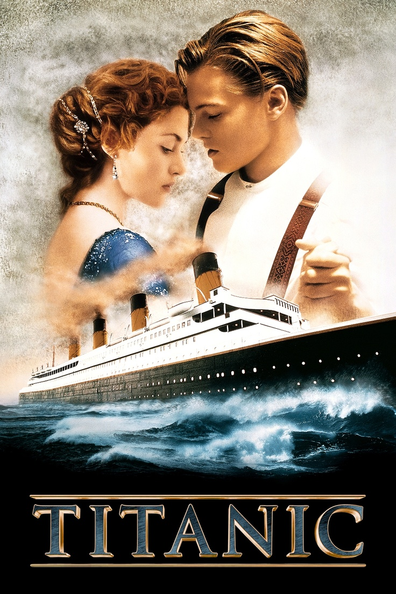

Parker
Молодые влюбленные Джек и Роза находят друг друга в первом и последнем плавании «непотопляемого» Титаника. Они не могли знать, что шикарный лайнер столкнется с айсбергом в холодных водах Северной Атлантики, и их страстная любовь превратится в схватку со смертью…